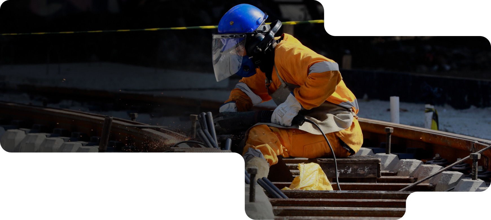

 Conheça as
iniciativas da
prefeitura para aprimorar a
qualidade de vida dos cariocas
Conheça as
iniciativas da
prefeitura para aprimorar a
qualidade de vida dos cariocas
A GENTE PRIORIZA
QUEM MAIS PRECISA
Conheça as
iniciativas da
prefeitura para aprimorar a
qualidade de vida dos cariocas
A gente prioriza quem
mais precisa
mais precisa
—— Super Cento Carioca de Saúde
O maior e mais moderno complexo de Saúde da América Latina
São 520 médicos especialistas contratados
Filas zeradas para diversos exames e procedimentos
O maior e mais moderno complexo de Saúde da América Latina
O Super Centro Carioca de Saúde ajudou a
reduzir em 50% o tempo de espera por exames,
consultas e cirurgias na fila do SISREG.
113 mil consultas e
procedimentos por mêsSão 520 médicos especialistas contratados
Filas zeradas para diversos exames e procedimentos
—— Hospital Ronaldo Gazolla
Saúde de qualidade pra
quem mais precisa
Saúde de qualidade pra
quem mais precisa
Super Centro Carioca de Saúde, Clínicas
da Família recuperadas, mais médicos
nas UPAs e hospitais municipais… Ainda
não tá bom, mas quem precisa sabe que
a Saúde Pública Carioca tá diferente.
da Família recuperadas, mais médicos
nas UPAs e hospitais municipais… Ainda
não tá bom, mas quem precisa sabe que
a Saúde Pública Carioca tá diferente.
Da Zona Norte à Zona Oeste,
tem Bairro Maravilha!
tem Bairro Maravilha!
—— Urbanização pra quem mais precisa
3 a cada 4 obras são
na Zona Oeste
Sai lama, poeira e enchente
Mais de 1.200 ruas serão urbanizadas na ZO e ZN
3 a cada 4 obras são
na Zona Oeste
Diversos bairros das zonas Norte e Oeste estão recebendo serviços essenciais de urbanização pra que os
cariocas tenham dignidade e mais qualidade de vida.
Sai lama, poeira e
enchenteSai lama, poeira e enchente
Mais de 1.200 ruas serão urbanizadas na ZO e ZN
—— Muito mais que uma obra!
300 mil pessoas serão
beneficiadas na Zona
Norte e na Zona Oeste
300 mil pessoas serão
beneficiadas na Zona
Norte e na Zona Oeste
O programa tá urbanizando várias regiões da
cidade, mas ele é muito mais que isso. É
dignidade, é oportunidade, é emprego, é
qualidade de vida.
cidade, mas ele é muito mais que isso. É
dignidade, é oportunidade, é emprego, é
qualidade de vida.
Escrevendo uma nova
história com o Morar Carioca
história com o Morar Carioca
—— Lar doce lar
As obras na Comunidade
do Aço já começaram
 Beneficiamos 700 famílias
da Zona Oeste do Rio
Beneficiamos 700 famílias
da Zona Oeste do Rio
Saneamento, pavimentação e
áreas de lazer
44 novos blocos de
apartamentos
As obras na Comunidade
do Aço já começaram
É o Morar Carioca levando urbanização, dignidade
e qualidade de vida pra mais de 700 famílias da
Zona Oeste do Rio.
e qualidade de vida pra mais de 700 famílias da
Zona Oeste do Rio.
Beneficiamos 700 famílias
da Zona Oeste do Rio Saneamento, pavimentação e
áreas de lazer 44 novos blocos de
apartamentos
—— Hospital Ronaldo Gazolla
Saúde de qualidade pra
quem mais precisa
Saúde de qualidade pra
quem mais precisa
Super Centro Carioca de Saúde, Clínicas
da Família recuperadas, mais médicos
nas UPAs e hospitais municipais… Ainda
não tá bom, mas quem precisa sabe que
a Saúde Pública Carioca tá diferente.
da Família recuperadas, mais médicos
nas UPAs e hospitais municipais… Ainda
não tá bom, mas quem precisa sabe que
a Saúde Pública Carioca tá diferente.
A nova era do transporte
público carioca começou!
público carioca começou!
—— BRT pra crer!
A transformação também vai chegar na Transoeste
Mais passageiros: 320 mil cariocas viajando diariamente
Devolvemos 75 linhas para as ruas da cidade
A transformação também vai chegar na Transoeste
Estamos refazendo as pistas do corredor Transoeste e transformando cinco estações em terminais.
Menos tempo de espera:
intervalos inferiores a 10 minutosMais passageiros: 320 mil cariocas viajando diariamente
Devolvemos 75 linhas para as ruas da cidade
—— Transporte como você merece
99% das estações revitalizadas
99% das estações revitalizadas
Desde 2021 a Prefeitura está investindo na
reconstrução do sistema. Estações reformadas
e reabertas, construção de novos terminais,
pista nova na Transoeste, a Transbrasil e o
Terminal Gentileza ficando prontos e novos
BRTs na pista.
reconstrução do sistema. Estações reformadas
e reabertas, construção de novos terminais,
pista nova na Transoeste, a Transbrasil e o
Terminal Gentileza ficando prontos e novos
BRTs na pista.
Mapa de
Investimentos
Investimentos
Bem-vinda(o) ao Mapa de
Investimento da Prefeitura da
Cidade do Rio de Janeiro
Investimento da Prefeitura da
Cidade do Rio de Janeiro
Sobre
Página criada e administrada pela Equipe de Visualização de Dados da Prefeitura da Cidade do Rio de Janeiro
Dados
As informações apresentadas no Mapa de Investimentos foram fornecidas pelas Equipes de Comunicação da Prefeitura